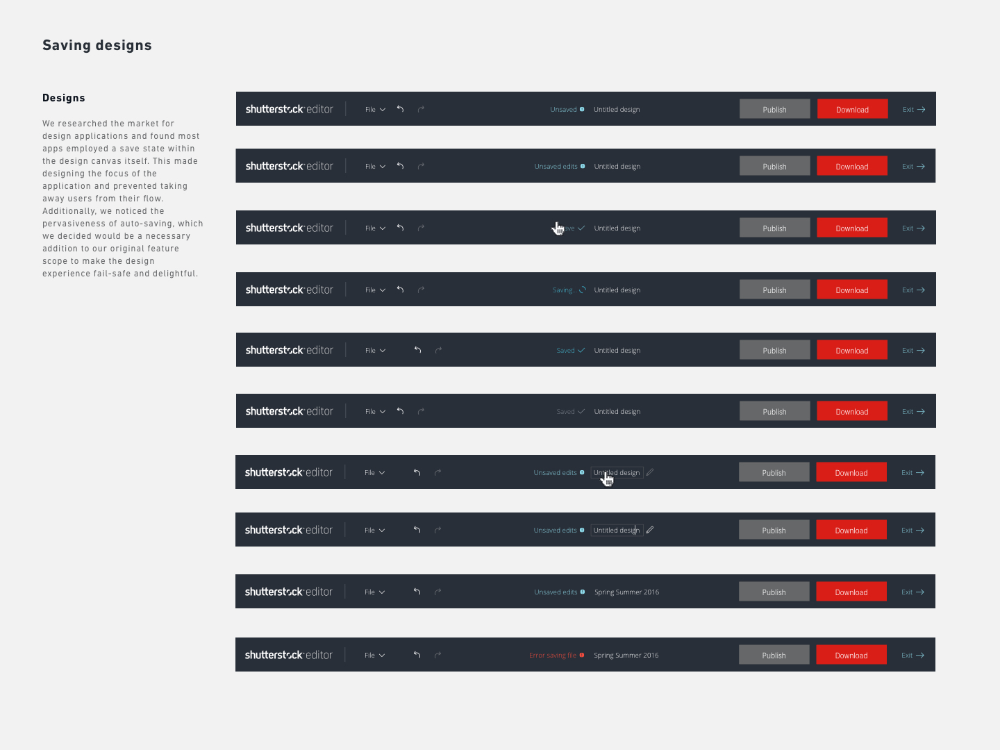
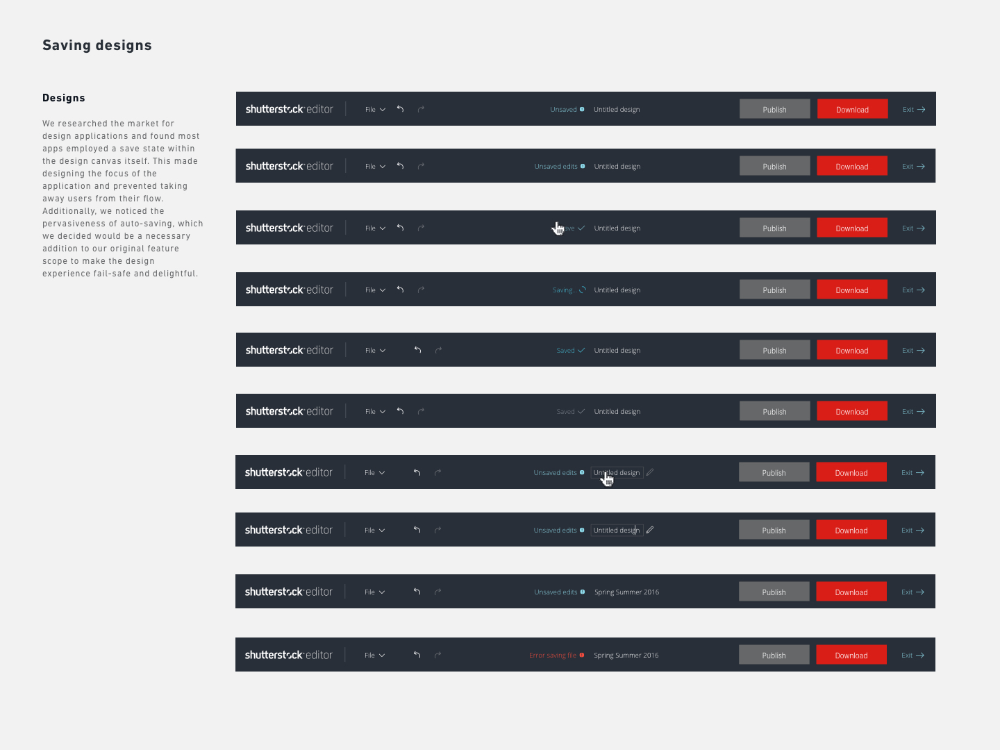

In Feburary of 2016, I joined Shutterstock Editor, a new product group launched as one of the company's first steps into becoming a creative workflow platform. Prior to this development, Shutterstock was mainly a 2-sided marketplace, connecting a global audience of photographers with companies looking for stock assets such as images and videos. Since I had always been interested in the subject of creativity and understanding how it could be more accessible, working on a tools product empowering creativity was a dream come true.
Sign in flows
Editor launched its beta without the ability to let users design without an account. The sign in process quickly became an impediment to growing our user base. I was tasked with analyzing the sign in flow and proposal of where to add sign up walls in the user flow.

The new flows I designed enabled customers to explore Editor before account creation/sign ins.

Saving from the header
Promote stickiness and create a frictionless design experience by improving save
 

Filters
Expand on the ability to add image filters and promote filter discovery in-app


Prototype we used to test one of our designs
Search and Discovery
Expand basic features in Editor, allowing users to stay in app without the need to search for images separately

Search: finished design

Downloading exploration and concepts
We had to fix some legacy UX/UI issues where a modal was used to navigate between steps to download. The redesign gave users a larger image preview and encouraged download completion

The redesign accomplished several things. It reduced interaction complexity by removing unnecessary logic between two modes. In addition, we listened to our users and gave them a larger preview of their design, creating a frictionless downloading experience.
Share exploration and concepts
In this redesign, we learned through customer support that our share flow through a series of modals became a source of friction which decreased share rates. We prototyped several sharing modes and found users liked the inlined approach the most. Since this redesign, sharing has increased by 6% overall.

When we finally decided to test using the right panel for the share state, we observed how users would interact with it. Should the panel persist when users clicked on objects in the design canvas? What should happen when the user clicked off? How does interacting with an object on canvas affect this modeless state? We obsessively tested the design and found users treated this state as an intermediary state of their design process: clicking off should exit the share mode Another issue we ran into was indicating the the correct affordance. Since the panel was accessed with the Share button, we needed a toggle button with an ON/OFF state. Working with the company's platform team, we reviewed our design suggestions and ultimately agreed the buttons with a filled and outlined state, were enough to convey the affordance.